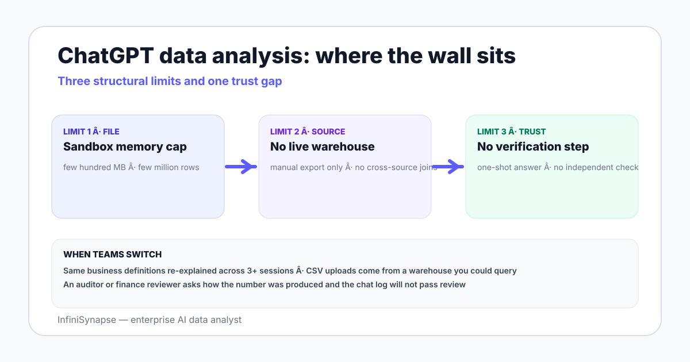

ChatGPT Data Analysis Limits in 2026: Where the Wall Sits
ChatGPT data analysis limits in 2026 — file size caps, session memory, no warehouse access, no business knowledge base, where teams move.
AuthorInfiniSynapse Research, product and data architecture team
Published2026-06-28 · Last verified 2026-06-28 · Next review 2026-09-28
Evidence baseOpenAI public documentation on ChatGPT Advanced Data Analysis (Code Interpreter), hands-on testing in 2026, OpenAI community forum reports, and field experience switching teams from ChatGPT to a connected data agent.
Disclosure: This page is published by InfiniSynapse, which sells an enterprise AI data analyst many teams switch to from ChatGPT. The review is written to be useful even if you stay on ChatGPT — the limits and the workaround patterns apply regardless.
TL;DR
ChatGPT Advanced Data Analysis (formerly Code Interpreter) is a sandboxed Python environment with limits — single-file uploads in the hundreds of megabytes, a session-bound memory that resets on disconnect, no direct database connection, and no bound business knowledge base.
For one-off CSV or Excel analysis under a few hundred megabytes, the limits rarely bite. For ongoing team analysis across multiple sources and a shared semantic layer, they bite hard.
The biggest practical limit is the absence of a verification step — every result is a one-shot answer with no separate query that checks the answer is real, which is a blocker for audit-grade workflows.
Teams typically switch when three signals show up together: warehouse connection becomes mandatory, a shared business glossary becomes mandatory, and an evidence trail becomes mandatory.
The honest alternatives include warehouse-connected data agents like InfiniSynapse, BI-native AI such as Tableau Pulse or Power BI Copilot, and Databricks Genie or Snowflake Cortex Analyst if your data lives in one of those lakes.
ChatGPT data analysis tops out at single-file Python sandbox work — a few hundred megabytes, one session at a time, no direct warehouse connection, no bound business knowledge base, and no separate verification step. It is excellent for one-off CSV exploration and weak for ongoing team analysis with shared definitions. The hard wall is the verification gap, not the file size.

File size and row count limits — where the sandbox runs out
The Python sandbox behind ChatGPT Advanced Data Analysis runs in a temporary container with memory and time bounds. Three practical limits show up most often:
File upload size. A few hundred megabytes per file is the practical ceiling — bigger files either fail to upload or trip out-of-memory errors when pandas tries to load them.
Row count. A few million rows per CSV is workable; tens of millions are not. The sandbox runs out of memory on the load step, not the analysis step.
Multiple files. You can upload several files and join them, but the combined working set still has to fit in sandbox memory.
The fix on the user side is to pre-aggregate the data before uploading — group by the relevant grain, drop irrelevant columns, slim down to what the question requires. The fix on the tool side is to skip the upload entirely and connect to a warehouse where the engine handles aggregation.
Session memory and the rerun trap
Each ChatGPT session has its own sandbox state. Three consequences worth knowing before a project depends on it:
Disconnect drops the state. The variables you built and the intermediate dataframes you computed are gone. If the analysis took 20 minutes to assemble, you redo the 20 minutes.
No persistence across sessions. An analysis you ran yesterday is not directly resumable today — you re-upload the file and rebuild the analysis.
No sharing of state across team members. Even if you are on a team plan, each chat is its own sandbox; another analyst opening the same project starts from zero.
The rerun trap is the highest-cost limit in practice. Teams that try to standardize on ChatGPT for ongoing analysis end up rebuilding the same dataframe assembly chain across analysts and weeks.
No warehouse, no API, no bound business knowledge base
The single most common reason teams move past ChatGPT for data analysis is the source-and-context gap:
What you lose by staying on ChatGPT
Why it matters
Direct warehouse connection
Every analysis starts from a manual export, which drifts from production and rots between Mondays.
API access to live systems
No way to refresh data without re-uploading.
A bound business knowledge base
Every chat has to re-explain what "active customer" or "paid order" or "MAU" means — and the answer drifts across sessions.
Cross-source joins on live data
The CRM and the warehouse cannot both be queried in one analysis without an export round-trip.
The newest class of tools — data agents with a bound knowledge base — fix all four at once, which is why team workflows move there even when individual analyst comfort with ChatGPT is high.
No verification step and what that means for trust
An audit-grade data analysis answer has five parts: the plan, the SQL or code that ran, the data the code ran on, the verification queries that confirmed the answer is real, and the sources or definitions the analysis used. ChatGPT shows the first three. The verification step and the bound source list are missing.
For a one-off exploration that is fine. For an answer a finance reviewer signs off on, the verification gap is the hard wall. Standards like the NIST AI Risk Management Framework and ISO/IEC 42001 both push toward an evidence trail an auditor can read; ChatGPT's chat transcript is not a substitute.
What a verification step looks like in a connected agent
When the answer is "monthly active customers were 14,302 last month", a verification step independently counts active customers using a second query (different filter expression or different table path) and compares. If the two numbers disagree, the agent surfaces the gap to the analyst before reporting. This is the pattern documented in Anthropic's agent research and the ReAct paper.
When ChatGPT is still the right call for data analysis
Three patterns where ChatGPT is the right tool and switching would be over-engineering:
One-off CSV or Excel exploration. A vendor sends you a 50MB CSV. You want a quick summary and a chart. ChatGPT handles this in two prompts.
Pre-analysis sketching. You want to test an analytical idea on a sample before writing the dbt model. ChatGPT is a fast sketchpad.
Individual learning and skill-building. A new analyst wants to learn how a window function works on a sample. The sandbox is great for solo learning.
The rule of thumb is: when the analysis is yours, throwaway, and the data fits in one file, ChatGPT is fine. When the analysis is the team's, recurring, and the data spans sources, it is the wrong tool.
When to switch and what teams switch to
Three signals say it is time to switch:
You have re-explained the same business definitions across more than three ChatGPT sessions.
The CSV you upload now lives in a warehouse you could query directly.
An auditor, finance reviewer, or board member has asked "how did we get this number" and the answer would not pass review.
ChatGPT is a great single-player tool. Team data analysis needs source connections, a bound business knowledge base, and a verification step ChatGPT does not provide.
Try a warehouse-connected AI data analyst with verification
Connect a Postgres, MySQL, Snowflake, or Supabase warehouse read-only. Seed a small knowledge base of business definitions. Ask one question and review the plan, SQL, result, and verification step before deciding whether to switch from ChatGPT.
What is the file size limit for ChatGPT data analysis?
The practical ceiling is a few hundred megabytes per file. Beyond that the upload fails or pandas runs out of memory in the sandbox during load. Row counts in the low millions usually work; tens of millions usually do not. The fix is to pre-aggregate the data before upload or to skip the upload entirely and connect to a warehouse where the engine handles aggregation.
Can ChatGPT connect to a database for data analysis?
ChatGPT Advanced Data Analysis cannot directly query a Postgres, MySQL, Snowflake, BigQuery, or other warehouse. Every analysis starts from a manual export. Teams that need live data refresh, cross-source joins, and a shared semantic layer eventually move to a warehouse-connected data agent that opens a read-only connection and runs queries directly against the source.
Does ChatGPT remember my data analysis between sessions?
No. Each ChatGPT session has its own sandbox state, and disconnecting drops the variables and intermediate dataframes you built. An analysis you ran yesterday is not directly resumable today — you re-upload the file and rebuild the analysis. The lack of persistent state across sessions is the highest-cost limit for ongoing team analysis.
What are the main limitations of ChatGPT data analysis?
Four limits dominate: file size and row count caps in the sandbox, session-bound memory that resets on disconnect, no direct warehouse or API connection, and no bound business knowledge base where definitions like "active customer" or "paid order" persist across sessions. A fifth limit is the absence of a verification step — every answer is one-shot, with no separate query that checks the result is real.
When should I switch from ChatGPT for data analysis?
Three signals say it is time: you have re-explained the same business definitions across more than three ChatGPT sessions, the CSV you upload now lives in a warehouse you could query directly, or an auditor or finance reviewer has asked how you got this number and the answer would not pass review. Any one of these is enough; all three together is overdue.
What are the alternatives to ChatGPT for data analysis?
Four credible alternatives in 2026: warehouse-connected AI data analysts like InfiniSynapse that add a bound knowledge base and verification step, Databricks Genie for Databricks-resident data, Snowflake Cortex Analyst for Snowflake-resident data, and BI-native AI like Tableau Pulse or Power BI Copilot when a semantic model already exists. Each lands a different tradeoff.
Why does the verification gap in ChatGPT matter?
An audit-grade answer needs the plan, the code, the data, an independent verification query, and the source definitions used. ChatGPT shows the first three. The verification step is missing, which is a blocker for finance, regulated industries, and any team where a board reviewer or external auditor will read the number. NIST AI RMF and ISO/IEC 42001 both push toward an evidence trail ChatGPT cannot produce on its own.
Methodology and review notes
Last updated: 2026-06-28 · Next scheduled review: 2026-09-28
This review reflects public OpenAI documentation on ChatGPT Advanced Data Analysis (previously Code Interpreter), hands-on testing in 2026 across multiple plan tiers, OpenAI community forum reports on limit behavior, and field experience with teams that switched to a warehouse-connected data agent. Numbers reported as ranges reflect observed variability rather than claimed guarantees.
Conflict of interest: InfiniSynapse publishes this guide and sells an enterprise AI data analyst. To reduce bias, the page leads with the topic itself, treats InfiniSynapse as one option among many, and links to external sources for every numeric claim.
Update cadence: Reviewed every 90 days for accuracy and link health.